OLAY, GÖRÜNTÜ İZLEME, ARAŞTIRMA VE TESPİT TUTANAĞI
30.07.2022 tarih saat 09.00 sıralarında Yenişehir Abdullatif Türkgezer Polis Merkezi Amirliğimize intikal eden 2022-2656 suç numaralı Faili Meçhul "MALA ZARAR VERME-İŞYERİNDEN VE KURUMDAN HIRSIZLIK" suç konusu ile ilgili olarak;
Müşteki Ahmet DÖNMEZ isimli şahıs ifadesinde;
Yenişehir Mahallesi Mustafa Akyol Sokakta bulunan Mado isimli işyerinin sahibiyim.
30.07.2022 tarih saat 05.00 sıralarında beni MVK yönetimi beni aradı. İşyerime hırsız girdiği bilgisini verdi. İşyerime gidip işyerimi kontrol ettiğimde işyerinin giriş kapısının kilidinin kırık olduğunu kapının açık olduğunu gördüm. İçeriye girdiğimde yazar kasanın ve yazar kasanın yanında bulunan para çekmecelerinin açık olduğunu gördüm. Yazar kasada ve yanında bulunan para çekmecelerinin içerisinde adetini bilmediğim yaklaşık olarak 20 bin TL para vardı.
Ayrıca Yazar kasanın karşısında bulunan masanın üzerindeki markasını ve seri numrasını bilmediğim dizüstü bilgisayarın yerinde olmadığını farkettim. MVK site yönetimine ait güvenlik görevlisi ile görüştüğümde işyerine giren şahısları gördüğünü söyledi. Çalınan malzemelerim 30.07.2022 tarih kapanış saati yani saat 02.00 sıralarında yerindeydi. Yazar kasa ve yanında ki çekmecelerin kilidi vardır. Yazar kasanın kilidi üzerindedir. Diğer çekmecelerin anahtarı yazar kasanın içindedir. Çekmecelerin kilit sisteminde de hasar olduğunu farkettim. Çalınan paralarımın seri numarasını bilmiyorum. İşyerimin içerisini gösterir kamera sistemim vardır.
Kamera görüntülerini temin etmemin ardından Polis Merkezi Amirliğinize teslim edeceğim.
Yaşanan olayda maddi zararım 35 bin TL'dir. Şüphelendiğim kimse yoktur. Çalınan dizüstü bilgisayarın faturası vardır. Fakat nerede olduğunu bilmiyorum. Çalınan başkaca bir eşya olup olmadığını bilmiyorum. İşyerimin hırsızlığa karşı kasko veya sigortası yoktur. Olayı gerçekleştiren şahıs ya da şahıslardan şikayetçiyim şeklinde beyanda bulunduğu, Bilgi Alma Sıfatıyla ifadesi alınan Ali Rıza ÖZTÜRK isimli şahıs ifadesinde
Ben Yenişehir Mahallesi Mustafa Akyol Sokakta bulunan MVK Rezidansda Özel Güvenlik Görevlisi olarak çalışmaktayım. 30.07.2022 tarih saat 04.55 sıralarında MVK
Rezidansın altında bulunan Mado isimli işyerinin giriş kapısından iki erkek şahsın çıktığını gördüm. Napıyorsunuz siz burada şeklinde bağırmaya başladım. Ellerinde siyah poşet vardı.
Hırsız diye bağırdım. Benim bağırmam ile birlikte bu iki erkek şahıs Madonun
karşısında bulunan yolda ki otobüs durağının önündeki beyaz renkli Hyundaı marka
heçbek tarzında 34ABU545 plaka sayılı araca doğru yöneldiklerini gördüm.
Peşlerinden koşmaya başladım. Elinde siyah poşet bulunan erkek şahıs yere düştü. Diğeri araca bindi. Aracın içerisinde de iki erkek şahıs vardı. Yere düşen erkek şahsın şapkası olay yerinde düştü. Şapkasını orada bıraktı. Geri almadı. Araca bindi ve araç ile Havaalanı kavaşağına istikametine doğru gittiler. Elinde siyah poşet bulunan erkek şahıs 170 boylarında siyah kirli sakallıydı. Kafasında şapka bulunan erkek şahısta aynı şekilde 170 boylarında siyah kirli sakallıydı. İki erkek şahısta zayıftı. Benimle hiç konuşmadılar. Bu şahısların açık eşgal bilgilerini tarif edemem. Yüzlerinde sağlık maskesi bulunmaktaydı. Aracın içerisinde bulunan diğer iki erkek şahsın eşgal bilgisini tarif edemem. Görmedim. Ben bu şahısların eşgal bilgilerini net tarif edemem. Bu şahısları görsem teşhiste bulunamam. Yaşanan olay sonrasında Sayfa 1 / 17


işyeri sahibini arayarak telefonla bilgi verdim. Benim bu konu ile ilgili söyleyeceklerim bunlardan ibarettir şeklinde beyanda bulunduğu anlaşılmıştır.
Olayın Polis Merkezimize intikali sonrası Suç Araştırma ve Soruşturma Büro Amirliği olarak yaptığımız araştırmalarda;
Suçta kullanılan ve şahısların geliş ve gidişlerinde kullandıkları beyaz renkli Hyundai marka aracın üzerine takılı olan 34 ABU 545 plakaların Gri Renkli Sedan AUDI 8V marka model araca çıktığı anlaşılmış, işyerinden hırsızlık yapan şahısların bu plakaları başka araçtan çalıp kullandıkları araca taktıkları değerlendirilmiştir.
İdaremiz Yenişehir Mahallesi MVK da bulunan Mado isimli işyerinde 30/07/2022 günü saat: 04:00-05:00 saatleri arasında gerçekleşen Faili Meçhul İşyerinden Hırsızlık olayında şüphelilerin olay yerine geliş ve gidişte kullandıkları ve içinde bulundukları beyaz Hyundaı İ10 veya İ20 marka model araca takılı 34ABU545
sayılı plakaların;
29/07/2022 tarih ve 2022-2361 suç numarası verilerek, İSTANBUL-
>BAHÇELİEVLER->BAHÇELİEVLER ŞEHİT VEHBİ ERDOĞAN POLİS MERKEZİ
AMİRLİĞİ idaresinden çalıntı müracaatının alındığı ve müştekisinin; 36124899350 T.C. kimlik nolu Tuğba ŞAHİN TOKATLIOĞLU olduğu anlaşılmış, müştekinin verdiği ifadesi aşağıya çıkartılmıştır.
Bahçelievler Mahallesi Mehtap Sokak no:7 D:12 sayılı adreste eşimle birlikte ikamet ederim. Ruhsatı annem Sakine ŞAHİN adına kayıtlı ancak benim kullandığım 34 ABU 545 plaka sayılı aracı 29.07.2022 Günü saat 16:00 sıralarında tüm güvenlik önlemlerini alarak yukarıda belirtmiş olduğum ikamet adresine ait otoparka park ettim. 30.07.2022 Günü saat 11:30
sıralarında Kütahya’da ikamet eden annem Sakine ŞAHİN beni arayarak kendisini polislerin aradığını, araca ait plakanın hırsızlık suçuna karıştığını, aracı ve plakayı kontrol etmesini söylemişler. Bende hemen otoparkta bulunan 34 ABU 545 plakalı 2017 model gri renk Audi A3
marka model aracımı kontrol ettim. Aracımın yanına gittiğimde aracıma ait plakaların yerinde olmadığını, plakalıkla birlikte çalındığını gördüm. Olayı hemen polis ekiplerine bildirdim ve Polis Merkezi Amirliğinize geldim. Bize ait plakayı kullanarak işlenen ve işlenecek suçlarla bir ilgimiz yoktur. Aracımıza ait plakaları çalan şahıs, şahıslardan davacı şikayetçiyim, dedi. Konu Bahçelievler İlçesinden sorumlu günün nöbetçi savcısı Zehra YILMAZ
ÖMERUSTAOĞLU’ na 0535 XXX 12 08 numaralı telefondan bildirilmiş, C.Savcımız, Tuğba Şahin TOKATLIOĞLU isimli şahsın müşteki beyanının alınması, kamera ve tanık araştırmasının yapılması, olay yeri inceleme ekiplerinin çalışma yapması, şüpheli şahısların tespiti ve temini durumunda tekrar talimat alınması, aksi halde evrakın ikmalen gönderilmesi talimatlarını vermiştir. şeklinde olduğu görülmüştür.
OLAYLA İLGİLİ ŞÜPHELİLERİN OLAYA AİT KAMERA GÖRÜNTÜLERİ
Meydana gelen olayla ilgili olarak görevlilerimizce temin edilen hırsızlık anlarına ait görüntülerin ekran alıntıları aşağıya çıkartılmıştır.
(Mado isimli firmaya ait alınan görüntülerin yaklaşık 1 saat ileri olduğu) Sayfa 2 / 17
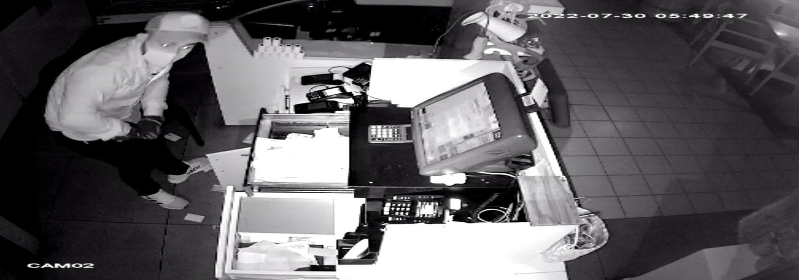
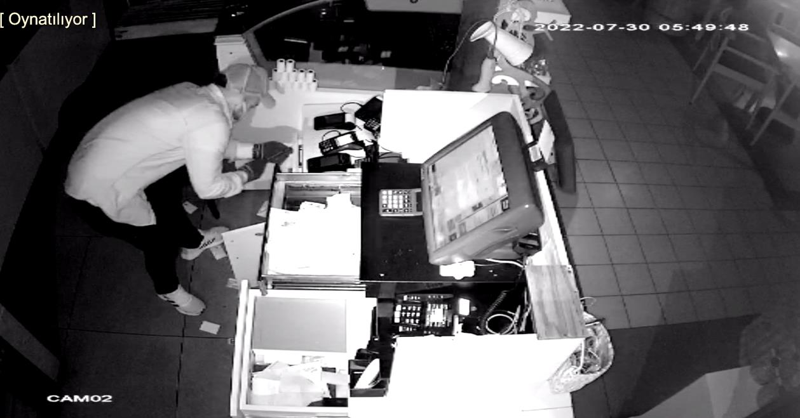
ŞÜPHELİ 1
ŞÜPHELİ 1
ŞÜPHELİ 1
Sayfa 3 / 17
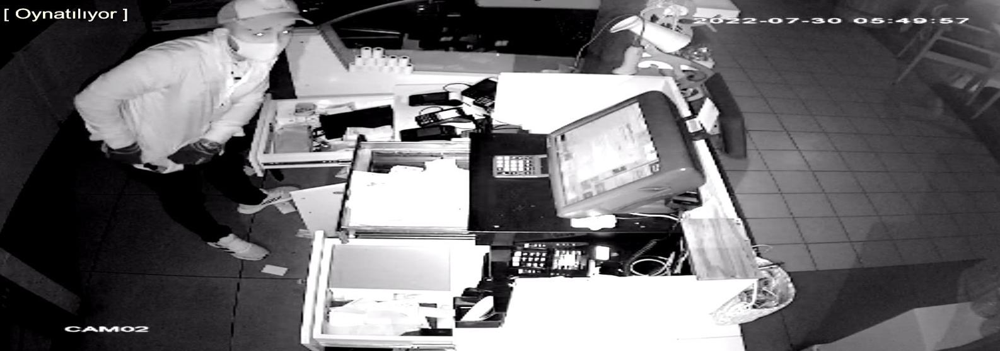
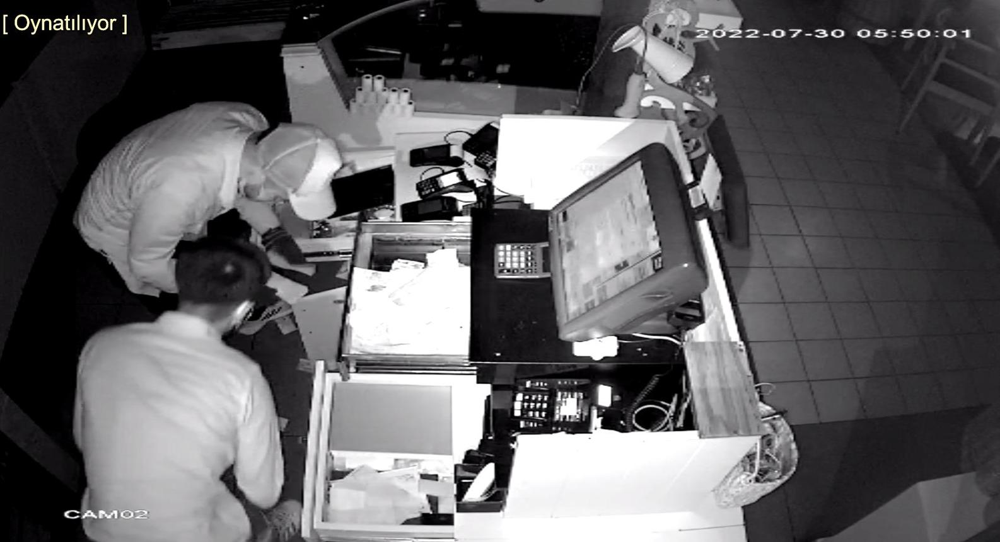
ŞÜPHELİ 1
ŞÜPHELİ 1
ŞÜPHELİ 1
ŞÜPHELİ 2
Sayfa 4 / 17
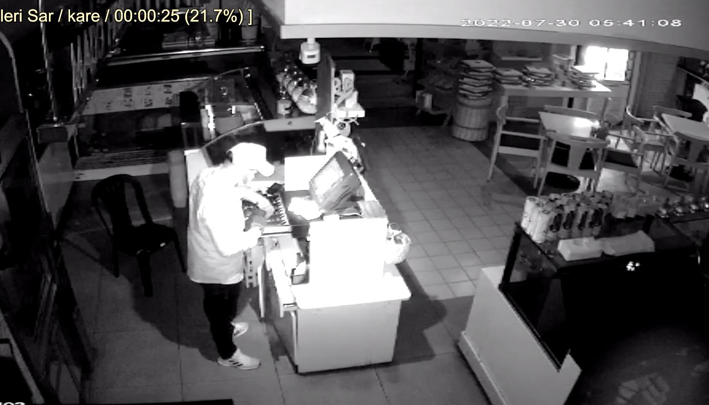
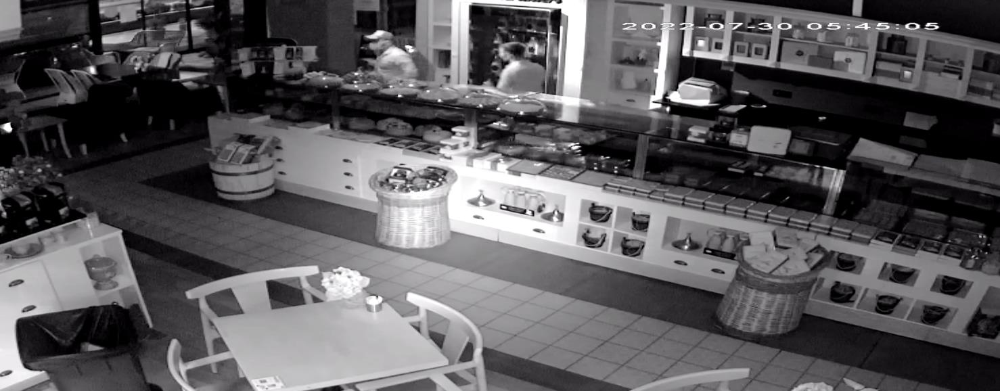
ŞÜPHELİ 2
ŞÜPHELİ 1
Sayfa 5 / 17
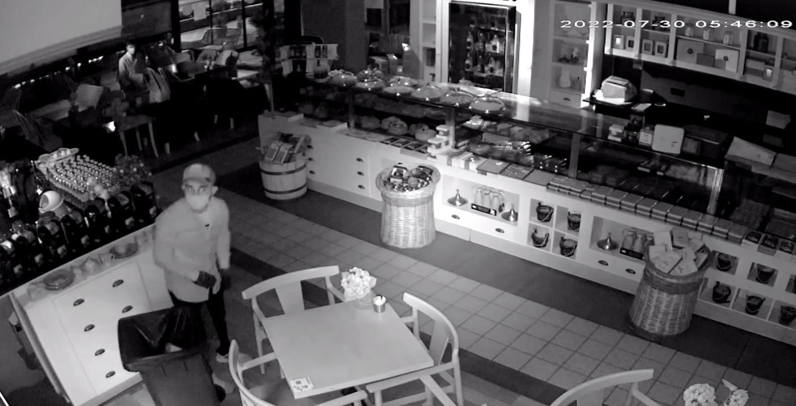
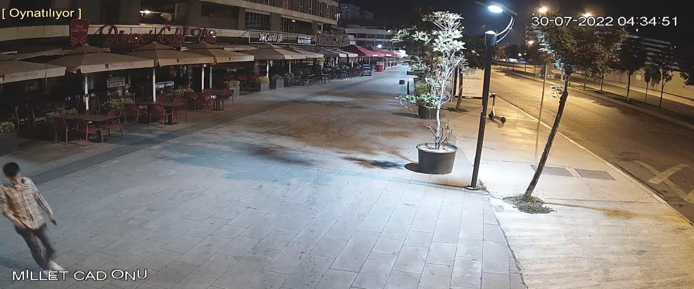
ŞÜPHELİ 2
Sayfa 6 / 17
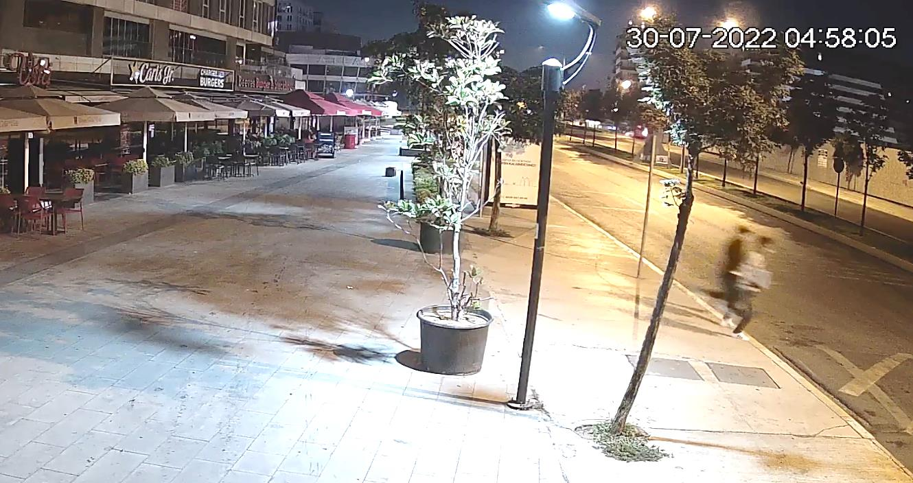
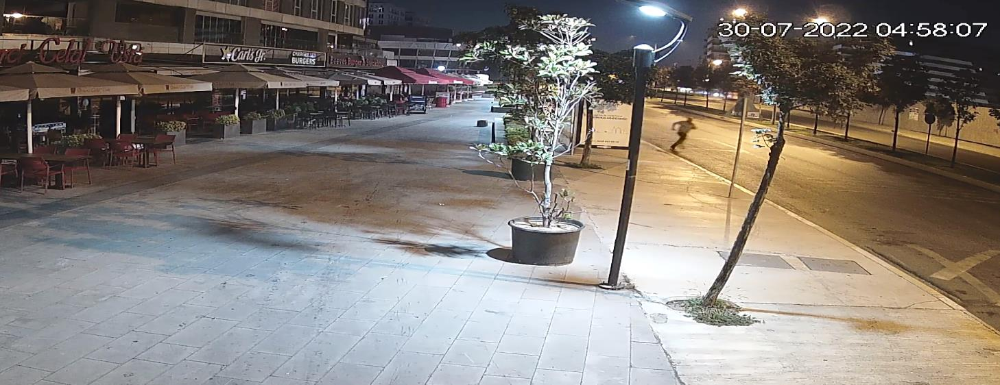
ŞÜPHELİLERİN
KAÇMA ANI
BEKÇİNİN
ŞÜPHELİLERİ
KOVALADIĞI AN
Sayfa 7 / 17
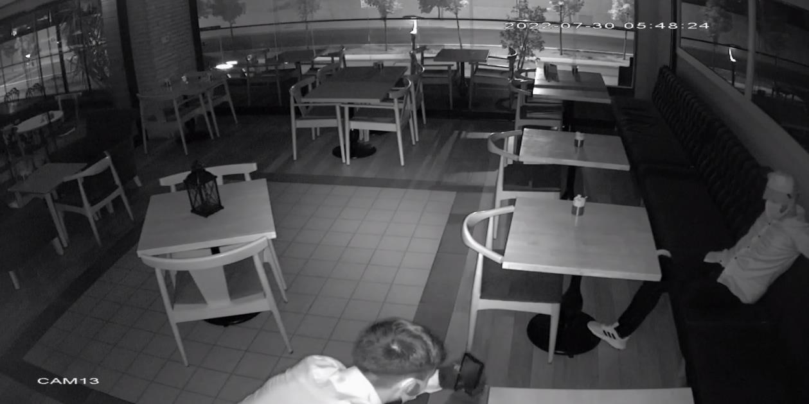
ŞÜPHELİLERİN
ARAÇ İLE KAÇMA
ANI
ŞÜPHELİLERİN HATIRA
RESMİ ÇEKTİRDİĞİ AN
ŞÜPHELİ 2
OLAY İLE ALAKALI ANALİZ VE DEĞERLENDİRME
İlçemiz Pendik Yenişehir Mahallesinde bulunan Mado isimli işyerinde meydana gelen olayla alakalı olarak;
Bahse konu işyerine gelen şahısların beyaz Hyundaı İ20 araç ile geldikleri, aracı yolun karşısına bıraktıkları ve 2 kişi olarak işyerine geldikleri, 1. Şüpheli olarak isimlendirilen şahsın siyah montlu içinde beyaz tişört olduğu, siyah kot pantolonlu beyaz spor ayakkabılı olduğu, sakallı olduğu, saçlarının arkasının ve yanlarının oldukça kısa olduğu, başında şapka olduğu
Sayfa 8 / 17
2. Şüpheli olarak isimlendirilen şahsın çizgili kareli açık renk gömlekli olduğu, sakallı olduğu, saçlarının yanları ve arkasının oldukça kısa olduğu, diğer kısmının uzun olduğu, ayağında spor ayakkabı olduğu, Şahısların her ikisinin de yüzünde sağlık maskesi olduğu, Kullandıkları aracın kiralık veya çalıntı olabileceği,
Kullandıkları aracın orijinal plakalarını değiştirmiş olabilecekleri, Kullandıkları araca çalıntı veya ikiz plaka takmış olabilecekleri, Şahısların İstanbul ili Avrupa yakasından İlçemiz Anadolu yakasına geldikleri,
Şahısların gelirken plakasının değiştirilmiş olarak ilçemize gelmiş
olabilecekleri,
Şüpheli şahısların Avrupa yakasında bilhassa yukarıda ifadesi bulunan ve AUDİ araçtan çalınan müştekinin plakalarının (34ABU545) Bahçelievler ilçesinden çalındığından bu ilçeye yakın İlçelerde ikamet ediyor olabilecekleri değerlendirilmiştir.
ŞÜPHELİLERİN OLAYDA KULLANDIKLARI ARAÇ İLE İLGİLİ
ÇALIŞMALAR
Bahse konu olayda şüphelilerin kullandıkları aracın Hyundaı İ20 olduğu üzerinde 34ABU545 plakaların takılı olduğu (bilgi sahibi tanık ifadelerinde geçtiği üzere), bu plakaların Bahçelievler ilçesinde AUDİ araçtan çalıntı olduğu ve müşteki ifade verdiği ve suç numarası verilip tahkikata başlanıldığı anlaşılmış, 34ABU545 plakalı aracın PTS geçişleri kontrol edildiğinde ise; 34ABU545 Plakalı Aracın PTS Geçişleri
Sayfa 9 / 17
Görüleceği üzere 34ABU545 plakalı aracın;
30 Temmuz 2022 günü yani olay günü saat: 03:45:21 de 15 Temmuz Şehitler Köprüsünden Anadolu yakasına geçtiği,
04:03 te aynı aracın Kurtköyden geçişinin olduğu ve ilçemize girdiği, Olay sonrası ilçemizden kaçarak 05:08 de Çamlıca gişelerden geçip Avrupa yakası istikametine gittiği,
05:15 te ise 15 Temmuz Şehitler Köprüsünden tekrar Avrupa yakasına geçtiği görülmüştür.
34ABU545 Plakalı Aracın PTS Görüntüleri
İlçemizden çıktıkları görüntü
ŞÜPHELİ 2
ŞÜPHELİ 1
Tampondaki kırık
Tampondaki kırık
Görüleceği üzere şüpheli şahısların olay sonrası Pendik Viaport İstikametinden İstanbul İstikametine gittikleri, ARACIN SİPERLİKLERİNİ GECE
OLMASINA RAĞMEN İNDİRDİKLERİ VE EŞGAL VERMEMEYE ÇALIŞTIKLARI, Araçta belirgin olarak ön tamponunda işaretlenen yerlerde kırıklar (çatlak) olduğu görülmüştür.
Sayfa 10 / 17
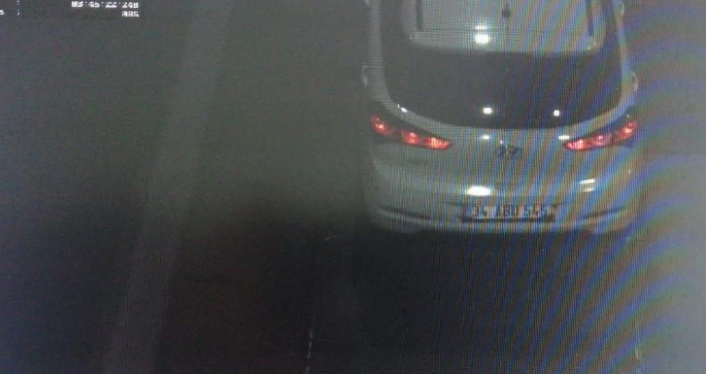
İlçemizden girdikleri görüntü
Aynı şekilde ilçemize girerken de GECE OLMASINA RAĞMEN
SİPERLİKLERİ KAPATTIKLARI görülmüştür.
Sayfa 11 / 17
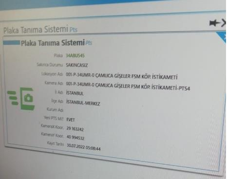
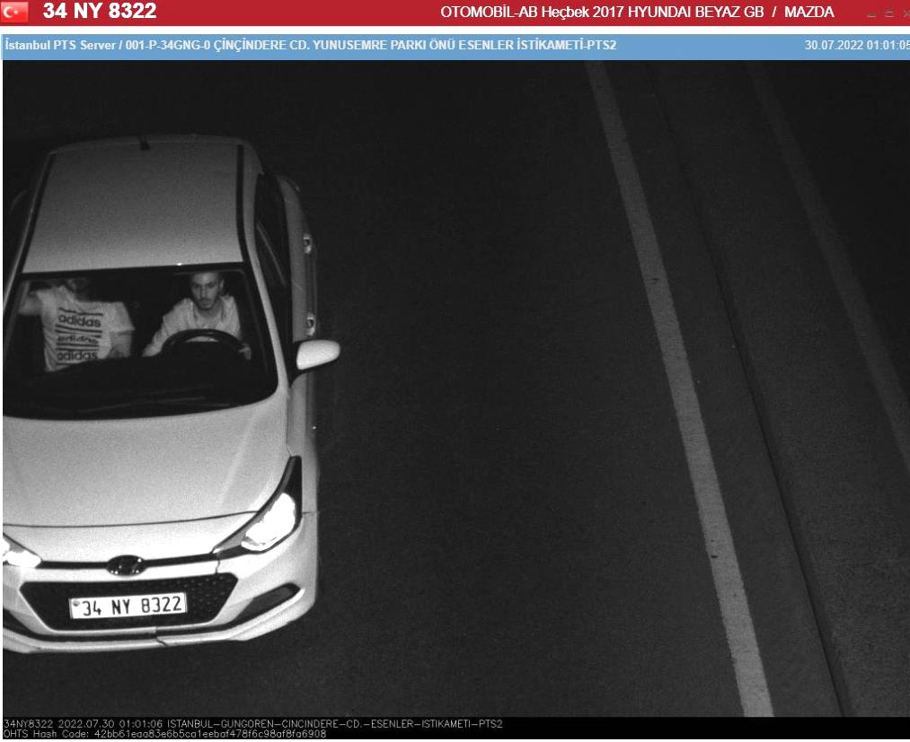
ARACIN GERÇEK PLAKASININ VE ŞÜPHELİ ŞAHISLARIN
TESPİTİNE YÖNELİK ARAŞTIRMA VE ÇALIŞMALAR
Bahse konu olayın faillerinin ve kullandıkları aracın gerçek plakasının tespiti ile ilgili olarak görüntüler tekrar tekrar izlenmiş, ayrıntılar not alınmış, Açık ve Kapalı kaynaklardan bu tür olaylar incelenmiş, şahısların yüzlerinin tam olarak görünmemesinden dolayı aracın tespitine yönelik çalışmaya yoğunlaşıldığında,
29 Temmuz günü akşam ve saatlerinden bilhassa 30 Temmuz
2022 günü sabah saatlerine kadar belirtilen güzergahlardan geçen
Hyundaı İ20 model araçların (gerek Avrupa yakası gerekse Anadolu
Yakası) plakaları not alınmış, çok sayıda araç çıkmasına rağmen eleme
yapılmış ve en aza indirilip bu araçların PTS görüntü ve geçişlerine
bakıldığında, ayırıcı özellik olarak araç içindeki şahısların giyim
kuşam ve eşgalleri ile BİLHASSA ARACIN ÖN TAMPONUNDAKİ KIRIKLAR
gözönüne alındığında;
30/07/2022 günü saat: 01:01:05 te Çinçindere Caddesi Yunus Emre parkı önü Esenler İstikameti PTS2 kamerasında birebir aynı marka model renk olan 34 NY 8322 plakalı aracın geçtiği ve içinde 2 erkek şahsın olduğu, aracı süren şahsın eşgalinin net olduğu görülmesi üzerine;
Sayfa 12 / 17

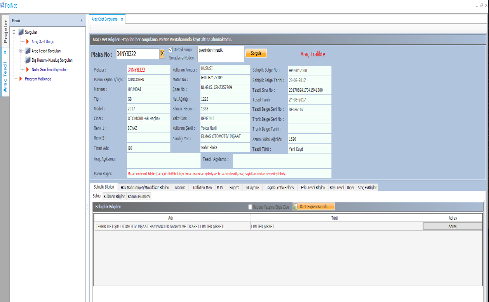
İlçemizdeki olayda kullanılan araç ile yukarıdaki araç MUKAYESE
EDİLDİĞİNDE;
30/07/2022 günü 01:00
30/07/2022 günü 05:00
sıraları Avrupa yakası
sıraları Anadolu yakası
görüntüsü
görüntüsü
Her 2 aracında BİREBİR AYNISI OLDUĞU, AYNI
ARAÇ VE ŞAHISLAR OLDUKLARI anlaşılması üzerine;
34NY8322 plakaların yaptığımız Polnet sorgusunda, Tekbir İletişim
Otomativ İnş.Hayv.San. Ltd.Şti ne çıktığı görülmüş, buraya ait telefon
ile görüşülüp yazı ile bilgi talebi istenmiş,
Sayfa 13 / 17

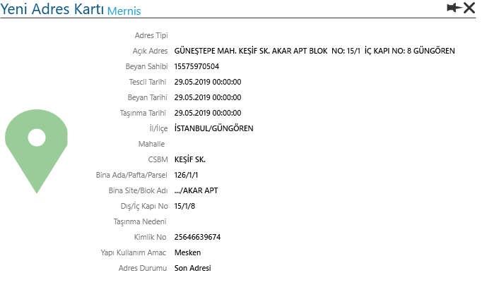
Gelen bilgi talebi cevabi yazısında aracın 25646639674 T.C. kimlik
nolu Furkan ORHAN tarafından 28 Temmuz 2022 de kiralandığı, 04 Ağustos
2022 de kiralamanın sona erdiği görülmüştür.
34NY8322 plakalı aracı 28 Temmuz 2022 de kiralayan
Furkan ORHAN isimli şahsın kimlik adres bilgileri&Açık Kaynak-Kapalı Kaynak Resim ve Fotoğrafları
Sayfa 14 / 17

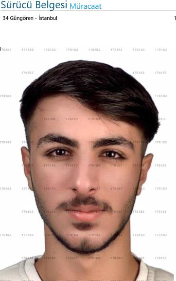
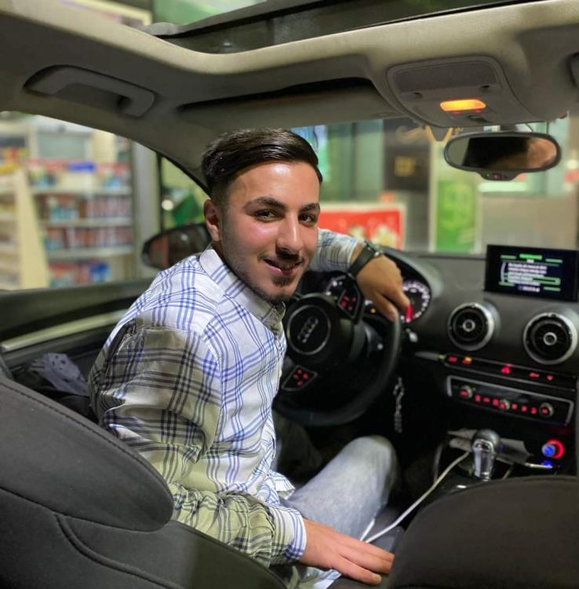
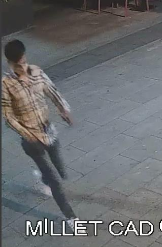
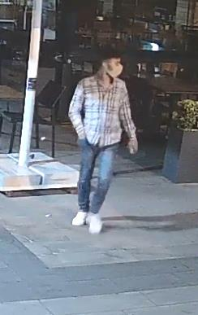
Furkan ORHAN Polnet
Furkan ORHAN Açık
Resmi
Kaynak Resmi
Furkan ORHAN isimli şahsın açık kaynakta bulunan resmi ile olay anındaki resmi mukayese edildiğinde; GÖMLEĞİNİN BİLE BİREBİR AYNISI OLDUĞU
görülmüştür.
30.07.2022 tarih saat 09.00 sıralarında Yenişehir Abdullatif Türkgezer Polis Merkezi Amirliğimize intikal eden 2022-2656 suç numaralı Faili Meçhul "MALA ZARAR VERME-İŞYERİNDEN VE KURUMDAN HIRSIZLIK" suç konusu ile ilgili olarak; 2. Şüpheli olarak işaretlenen şahsın 25646639674 T.C. kimlik nolu İhsan Sayfa 15 / 17
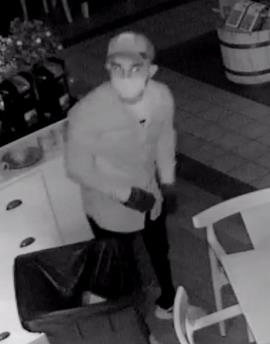
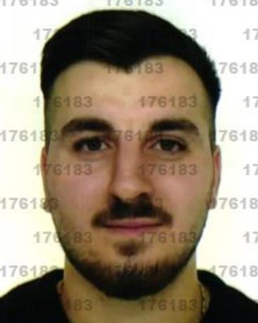
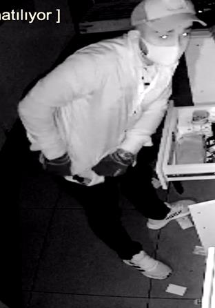
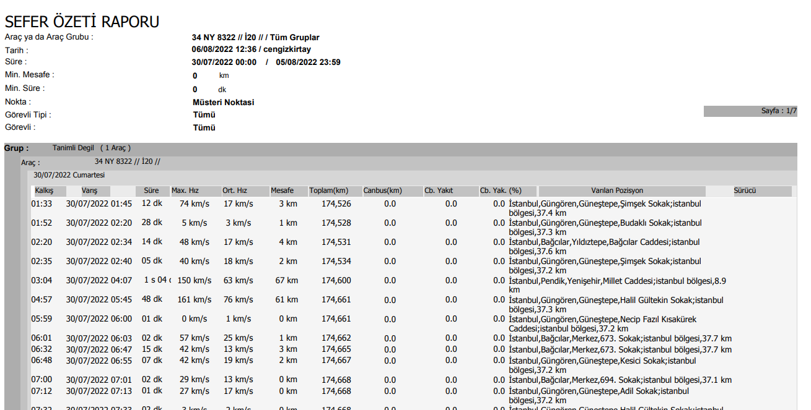
ve Azize oğlu 05/01/2002 Batman doğumlu Batman Beşiri Alaca nüf. Kay.
Furkan ORHAN olduğu KESİN VE NET OLARAK TESPİT EDİLMİŞ, Diğer şahıs olan ve 1. Şüpheli olarak işaretlediğimiz şüphelinin ise Furkan ORHAN ın abisi olan 25649639510 T.C. kimlik nolu 1999 doğumlu Selman ORHAN olduğu DEĞERLENDİRİLMİŞ,
Selman ORHAN isimli şahsın Açık ve kapalı Kaynak resimleri mukayese amaçlı aşağıya çıkartılmıştır.
Selman ORHAN
Selman ORHAN
Olaya ait resim
Olaya ait resim
Açık kaynak
Polnet resmi
resmi
Furkan ORHAN ve Selman ORHAN isimli şahsın ikamet adreslerinin GÜNEŞTEPE MAH. KEŞİF SK. AKAR APT BLOK NO: 15/1 İÇ KAPI NO: 8
GÜNGÖREN/ İSTANBUL olduğu anlaşılmıştır.
ŞAHISLARIN KİRALADIKLARI 34 NY 8322 PLAKALI Hyundaı İ20 marka model ARACIN 30 TEMMUZ 2022 YE AİT GPS KAYITLARI
Sayfa 16 / 17
Şüpheli şahısların kiraladıkları 34NY8322 sayılı kiralık aracın ilçemizde meydana gelen hırsızlık olayının olduğu 30 Temmuz 2022 günü saat: 04:07 de Olayın olduğu yer olan PENDİK YENİŞEHİR MİLLET CADDESİ İSTANBUL olarak GPS sinyali verdiği ve aracın burada olduğu kesin ve net olarak anlaşılmıştır.
Furkan ORHAN ın 2017 yılında Güngören ilçesinde Kasten Öldürmeye Teşebbüs suçundan işlem gördüğü, Uyap kaydının olmadığı,
Selman ORHAN ın suç ve UYAP kaydının olmadığı görülmüştür.
Her iki şahsında yakalama çalışmalarına başlanılmış, ancak İlçemiz Sorumluluk alanında ikamet etmedikleri için yakalanamamışlardır.
İş bu Olay Görüntü İzleme, Araştırma ve Tespit Tutanağı tarafımızca tanzimle altı birlikte imza altına alınmıştır. 06/08/2022 günü saat: 13:20
176183
181549
483269
Polis Memuru
Polis Memuru
Polis Memuru
Sayfa 17 / 17